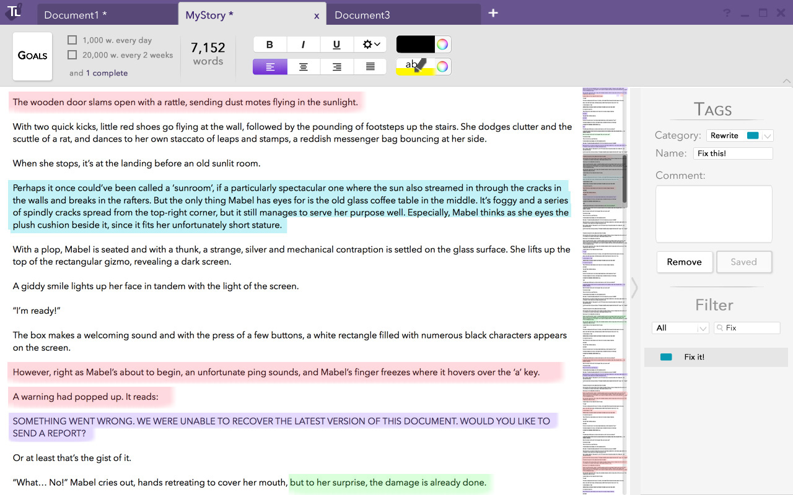

"The secret of becoming a writer is to write, write and keep on writing"
-Ken MacLeod
Writer's Block?
It happens to the best of us.
Despite passion and enthusiasm, creative writers often have trouble writing as frequently and consistently as they would like. Outside factors such as education and work always seem more pressing, and when it comes to writing their story, losing the train of thought is one of the worst things that could happen.
So how do you maintain a balance between writing and editing; continuing and growing?
For new writers, improving their writing quality often means tackling these two issues.
TagLine is the solution that gathers what creative writers need in a single word processor. Take a look at how TagLine is designed to help writers track their progress and tag writing as they go.
And ultimately, TagLine keeps writers writing.
Set Wordcount Goals
TagLine's goal dashboard visualizes the writer’s successes and trials, as well as their ability to consistently meet their goals.
Keep Track of Notes
Our design provides an intuitive way to create tags and notes while in the process of writing, allowing creative writers to continue their groove while simplifying both the editing and sharing process later.
Video Prototype
Interactive Prototype
Experience TagLine yourself!
We're using inVision to prototype our design and show exactly how TagLine lets writers track their writing.
View Prototype


Our Team

Andy Butler
abtler@uw.edu

Greg Kim
gregjinkim@gmail.com
Alexa McLaughlin
email